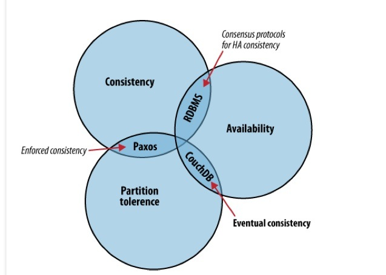
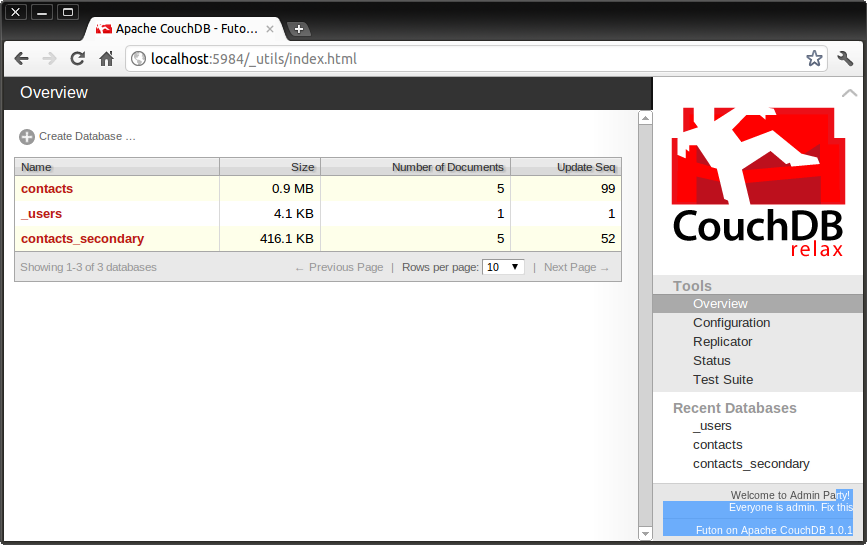
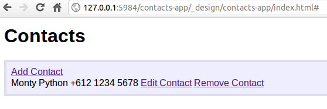
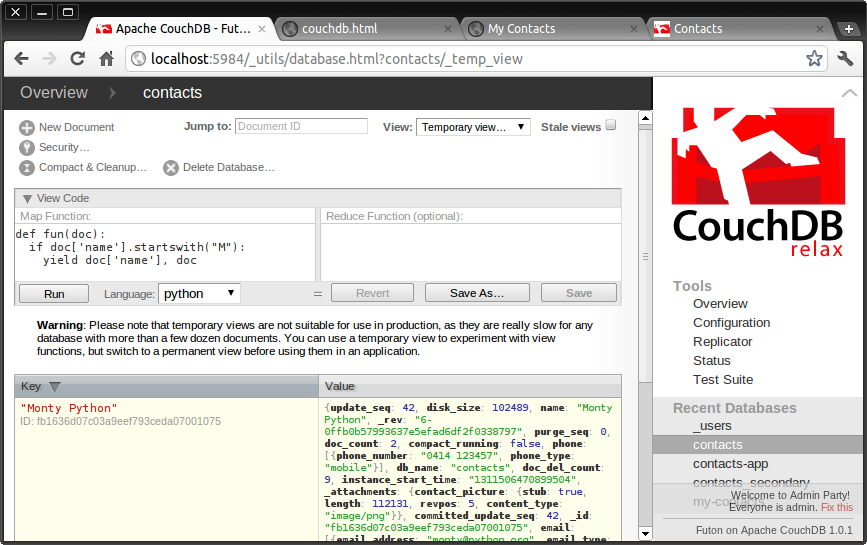

A Python on the Couch
A Python on the Couch
Mark Rees, Century SoftwarePyCon AU, Sydney, Australia, August 2011
What is CouchDB?
Not Only SQL
Document DB
Schema-less
HTTP API
Replication
Scalable
Distributed
What is CAP?
Consistency - All database clients see the same data, even with concurrent updates.
Availability - All database clients are able to access some version of the data.
Partition tolerance - The database can be split over multiple servers.
Distributed systems can only guarantee two
Eventual Consistency
CouchDB under the covers

No locks, uses MVCC
Versioning
Append only
Data stored as JSON
{
"_id": "fb1636d07c03a9eef793ceda07000572",
"_rev": "55-0ea6b3e4646580c48aea59dd28ae1212",
"phone": [
{
"phone_number": "+61 2 9999 9999",
"phone_type": "work"
},
{
"phone_number": "+61 412 123 456",
"phone_type": "mobile"
}
],
"name": "Monty Python",
"_attachments": {
"contact_picture": {
"content_type": "image/jpeg",
"revpos": 55,
"length": 93911,
"stub": true
}
}
}
HTTP API
>>> r = requests.put('http://localhost:5984/my-contacts') #create database
>>> r.content
'{"ok":true}\n'
>>> r_uuid = requests.get('http://localhost:5984/_uuids') #get a uuid
>>> r_uuid.content
'{"uuids":["bb4eddd42f7c98ec86bb16c3120001f2"]}\n'
>>> # add a document
>>> r = requests.put("http://localhost:5984/my-contacts/bb4eddd42f7c98ec86bb16c3120001f2", \
... data='{"name":"Monty Python", "phone":"+612 1234 5678"}')
>>> r.status_code
201
>>> r.content
'{"ok":true,"id":"bb4eddd42f7c98ec86bb16c3120001f2","rev":"1-ce5658e9585866d257ae80e10a1aca11"}\n'
# revise a document
>>> r = requests.put("http://localhost:5984/my-contacts/bb4eddd42f7c98ec86bb16c3120001f2", \
... data='{"_rev":"1-ce5658e9585866d257ae80e10a1aca11","name":"Monty Python", "phone":"+612 1234 5678", "email":"monty@python.org"}')
>>> r.status_code
201
>>> r.content
'{"ok":true,"id":"bb4eddd42f7c98ec86bb16c3120001f2","rev":"2-00c81aed8f6b6df83835017f0350df9c"}\n'
>>>
Using Requests module: http://docs.python-requests.org/
Futon
Querying Data
Views
Map Reduce
UnQL (NoSQL Query language) in the future
CouchApps
JavaScript, CSS, & HTML5 applications served directly from CouchDB
Create & manage couchapps with Python https://github.com/couchapp/couchapp
$ couchapp generate contacts-app 2011-08-19 16:58:30 [INFO] /home/mark/swdev/couchdb-pycon-au-2011/contacts-app generated. $ ls contacts-app _attachments couchapp.json evently _id language lists README.md shows updates vendor views $ cd contacts-app $ vi _attachments/index.html $ vi _attachments/edit.js $ vi _attachments/edit.js $ vi _attachments/style/main.css $ couchapp generate view byname $ vi views/byname/map.js; rm views/byname/reduce.js $ couchapp push contacts-app 2011-08-19 17:11:36 [INFO] Visit your CouchApp here: http://127.0.0.1:5984/contacts-app/_design/contacts-app/index.html
IBM tutorial - Building CouchApps http://goo.gl/2L2wY
Python CouchDB Clients
CouchDB (couchdb-python) - http://code.google.com/p/couchdb-python/
couchdbkit - http://couchdbkit.org/
couchdb-python-curl - http://code.google.com/p/couchdb-python-curl/
python-couchdb client
>>> import couchdb.client
>>> server = couchdb.client.Server()
>>> db = server['contacts']
>>> doc_id, doc_rev = db.save({'name':'Monty Python','phone':'+612 1234 5678'})
>>>
>>> db.update([
... couchdb.client.Document(name='Brian',email='brian@lifeof.org'),
... couchdb.client.Document(name='Eric Idle',email='eric@lifeof.org')])
[(True, u'804c2a84dcd264fbeea81c28b2000485', u'1-10d9a0bfe8d934e14ac9d28ed5546952'), (True, u'804c2a84dcd264fbeea81c28b20004ef', u'1-b20e3c32a1b9e731478a770b9a7ffb0f')]
>>>
>>> results = db.query('''function(doc) {
... emit(doc.name, doc);}''')
>>> for doc in results:
... print doc
<Row id=u'804c2a84dcd264fbeea81c28b2000485', key=u'Brian', value={u'_rev': ...
python-couchdb mapping JSON <-> Python objects
>>> from couchdb.mapping import Document
>>> from couchdb.mapping import TextField
>>> class Contact(Document):
... name = TextField()
... phone = TextField()
... email = TextField()
...
>>> contact = Contact(name='Dead Parrot',email='dp@pet-shop.net')
>>> contact.store(db)
<Contact u'804c2a84dcd264fbeea81c28b20008da'@u'1-9fe59fba51812190ebfb31232dcdfa7a' {'phone': None, 'name': u'Dead Parrot', 'email': u'dp@pet-shop.net'}>
>>> contact = Contact.load(db, contact.id)
>>> contact.phone = "+602 2222 9999"
>>> contact.store(db)
<Contact u'804c2a84dcd264fbeea81c28b20008da'@u'2-ee1e9fa988a43626a20aa04195eb506b' {u'phone': u'+602 2222 9999', u'name': u'Dead Parrot', u'email': u'dp@pet-shop.net'}>
Python Views
CouchDB supports external view servers. python-couchdb provides a view server
Enable in CouchDB local.ini
[query_servers] python=/usr/bin/couchpy
Web Framework Support
Django https://github.com/benoitc/couchdbkit
Flask http://packages.python.org/Flask-CouchDB/
web2py experimential built-in support
FormAlchemy https://github.com/FormAlchemy/formalchemy
pyramid-couchdb
Inspired by Flask-CouchDB, a WIP
https://bitbucket.org/hexdump42/pyramid-couchdb
form = ContactForm(request.POST)
req_post = request.POST
if form.validate():
contact = Contact.load(form.id.data, request.db)
contact.name = form.contactname.data
contact.phone = form.contactphone.data
contact.email = form.contactemail.data
if hasattr(request.POST["contactpicture_file"], 'file'):
image = request.POST["contactpicture_file"]
image_filename = image.filename
image_fileobj = image.file
request.db.put_attachment(contact,image_fileobj,
"contact_picture",
mimetypes.guess_type(image_filename)[0])
else:
contact.store(request.db)
url = request.route_url('contact_list')
return HTTPFound(location=url)
Resources
CouchDB Home http://couchdb.apache.org/
CouchApp Home http://couchapp.org/page/index